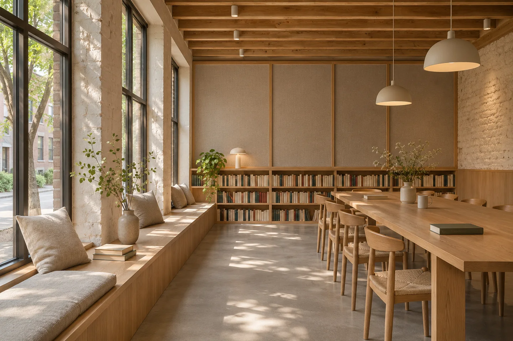

社区阅读空间 / 旧屋改造
岸边阅读室
一间沿街的旧店铺，白天供街坊自习和阅读，每周留出一晚做小型共读。

从入口向里走
进门两步就是原来的大桌。搬椅子、问候和借还书都在同一个位置发生，声音沿着空房间一直传到最里面。住在附近的读者常待在窗边，我们保留这排座位，把大桌沿入口墙旋转九十度，给进出留一条顺手的路径。
保留有记忆的墙
旧砖露在窗下和入口处，背后的整面空墙换成可拆洗的布面吸声板。木边框按原开间分格，维修时可以只取下一块。长桌和椅脚下加软垫，处理每天重复发生的拖动声。
用两种状态复核
空房和共读开始前各听一遍。入口允许低声交谈，窗边仍能听见翻页。共读结束，把椅子按地面的铜点移回，次日就可以恢复独立使用。
- 使用方式
- 个人阅读 / 小型共读
- 保留内容
- 沿街窗与旧砖墙
- 设计重点
- 动线分区 / 降低回响和拖椅声
- 交付记录
- 座位布置图、吸声板拆装说明与复测点位